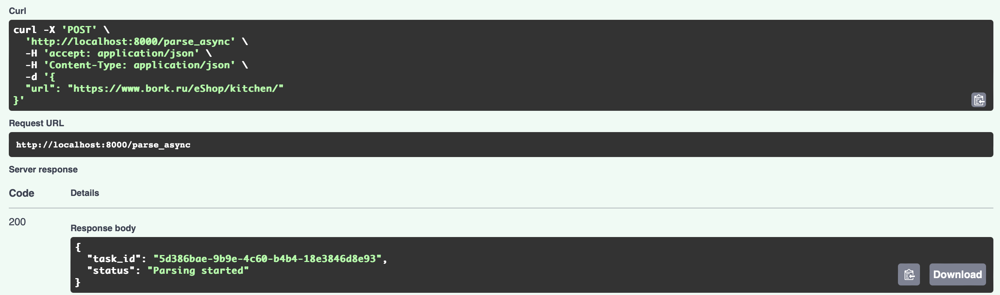
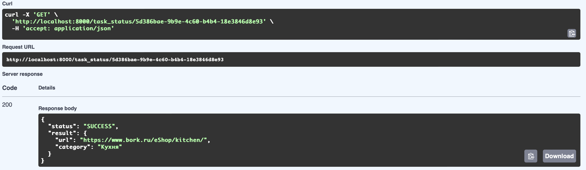

Задание 3
Упаковка FastAPI приложения в Docker, Работа с источниками данных и Очереди
Задача 1
Упаковка FastAPI приложения, базы данных и парсера данных в Docker
Dockerfile FastAPI приложения
FROM python:3.11
WORKDIR /app
COPY ./requirements.txt /app/requirements.txt
RUN pip install --no-cache-dir --upgrade -r /app/requirements.txt
COPY . .
CMD ["uvicorn", "main:app", "--host", "0.0.0.0", "--port", "8000"]
Dockerfile FastAPI парсера
FROM python:3.11
WORKDIR /parser_app
COPY requirements.txt requirements.txt
RUN pip install --no-cache-dir --upgrade -r requirements.txt
COPY . .
CMD ["uvicorn", "parser_app:app", "--host", "0.0.0.0", "--port", "8001"]
Файл requirements.txt
aiohappyeyeballs==2.6.1
aiohttp==3.12.6
aiosignal==1.3.2
alembic==1.15.2
annotated-types==0.7.0
anyio==4.9.0
attrs==25.3.0
bcrypt==4.3.0
certifi==2025.1.31
click==8.1.8
dnspython==2.7.0
email_validator==2.2.0
fastapi==0.115.12
fastapi-cli==0.0.7
frozenlist==1.6.0
h11==0.14.0
httpcore==1.0.8
httptools==0.6.4
httpx==0.28.1
idna==3.10
itsdangerous==2.2.0
Jinja2==3.1.6
Mako==1.3.10
markdown-it-py==3.0.0
MarkupSafe==3.0.2
mdurl==0.1.2
multidict==6.4.4
orjson==3.10.16
passlib==1.7.4
propcache==0.3.1
psycopg2-binary==2.9.10
pydantic==2.11.3
pydantic-extra-types==2.10.3
pydantic-settings==2.9.1
pydantic_core==2.33.1
Pygments==2.19.1
PyJWT==2.10.1
python-dotenv==1.1.0
python-multipart==0.0.20
PyYAML==6.0.2
rich==14.0.0
rich-toolkit==0.14.1
shellingham==1.5.4
sniffio==1.3.1
SQLAlchemy==2.0.40
sqlmodel==0.0.24
starlette==0.46.2
typer==0.15.2
typing-inspection==0.4.0
typing_extensions==4.13.2
ujson==5.10.0
uvicorn==0.34.2
uvloop==0.21.0
watchfiles==1.0.5
websockets==15.0.1
yarl==1.20.0
celery[redis]==5.3.1
requests
beautifulsoup4==4.12.3
docker-compose.yml
version: "3.9"
services:
api:
build:
context: .
dockerfile: Dockerfile
container_name: fastapi_app
ports:
- "8000:8000"
depends_on:
- parser
- db
- redis
environment:
- DB_ADMIN=postgresql://annashishkina:annashishkina@db/lab1_db
- REDIS_URL=redis://redis:6379/0
networks:
- app-network
celery_worker:
build:
context: .
dockerfile: Dockerfile
container_name: celery_worker
depends_on:
- redis
- db
environment:
- REDIS_URL=redis://redis:6379/0
- DB_ADMIN=postgresql://annashishkina:annashishkina@db/lab1_db
networks:
- app-network
command: celery -A celery_app worker --loglevel=info
parser:
build:
context: ./parser_app
dockerfile: Dockerfile
container_name: parser_service
ports:
- "8001:8001"
networks:
- app-network
db:
image: postgres:15
container_name: postgres_container
environment:
POSTGRES_USER: annashishkina
POSTGRES_PASSWORD: annashishkina
POSTGRES_DB: lab1_db
ports:
- "5432:5432"
networks:
- app-network
redis:
image: redis:7
container_name: redis
ports:
- "6379:6379"
networks:
- app-network
networks:
app-network:
Задача 2, 3
Вызов парсера из FastAPI через очередь
@app.post("/parse_async")
async def parse_async(request: ParseRequest):
task = parse_url_task.delay(request.url) # ставим задачу в очередь
return {"task_id": task.id, "status": "Parsing started"}
@app.get("/task_status/{task_id}")
async def get_task_status(task_id: str):
from celery.result import AsyncResult
result = AsyncResult(task_id, app=parse_url_task._app)
if result.state == "PENDING":
return {"status": "Pending"}
elif result.state != "FAILURE":
return {"status": result.state, "result": result.result}
else:
return {"status": "Failure", "error": str(result.result)}
@celery_app.task
def parse_url_task(url: str) -> dict:
headers = {
"User-Agent": "Mozilla/5.0 (Windows NT 10.0; Win64; x64) "
"AppleWebKit/537.36 (KHTML, like Gecko) "
"Chrome/121.0.0.0 Safari/537.36"
}
try:
response = requests.get(url, headers=headers, timeout=10)
response.raise_for_status()
html = response.text
soup = BeautifulSoup(html, 'html.parser')
scripts = soup.find_all('script')
category_name = None
for script in scripts:
if script.string and 'categoryName' in script.string:
match = re.search(r'categoryName:\s*"([^"]+)"', script.string)
if match:
category_name = match.group(1)
break
if category_name:
saved = save_category(category_name) # сохраняем в БД
return {"url": url, "category": category_name}
else:
return {"url": url, "error": "Категория не найдена"}
except Exception as e:
return {"url": url, "error": str(e)}
Запуск
docker-compose up --build
Эндпоинты
1) Получение id задания после постановки в очередь

2) Получение статуса и результата задачи 